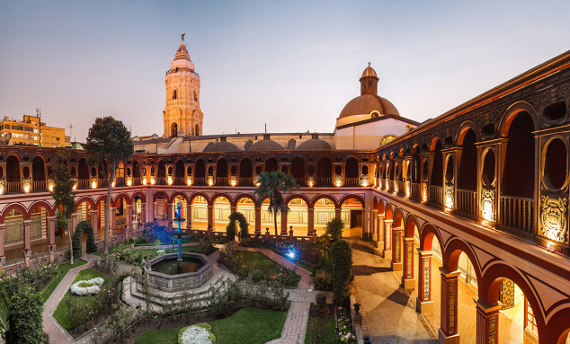
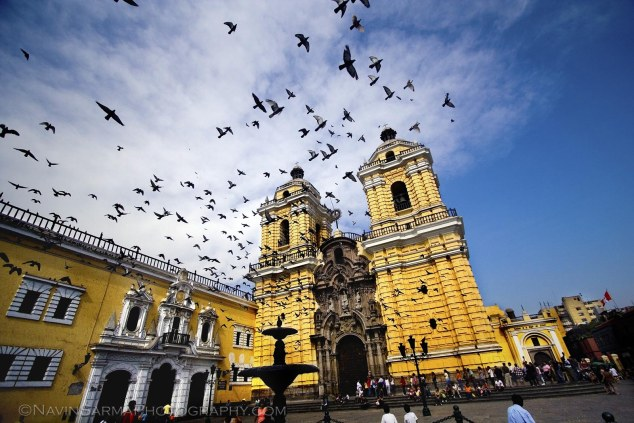
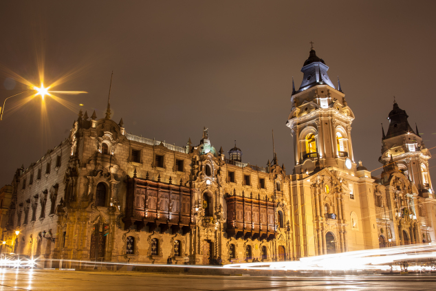

|
|||||
| Inicio | Gastronomia | Restaurantes | Discotecas | Museos | Iglesias |
Iglesias1. Santo DomingoSe trata de un lugar de gran importancia para los limeños ya que fue donde San Martín de Porres tuvo su celda y donde reposan ahora los restos de Santa Rosa de Lima. Ubicada en la primera cuadra del Jirón Camaná, en el Centro Histórico de Lima, fue terminada de construir en 1578, aunque quedó prácticamente destruida -y luego fue reconstruida- tras el terremoto de 1678. Su fachada es, junto con la fachada de la iglesia de La Merced, una de las dos únicas de estilo barroco churrigueresco, sobrecargada de adornos y labrada en piedra. En el coro de la iglesia se observa la sillería más antigua del Perú, trabajada en madera de cedro de Nicaragua, de estilo Renacentista.  |
|||||
2. San FranciscoEste complejo religioso se ubica a dos cuadras de la Plaza de Armas y está conformado por la Basílica y el Convento de San Francisco de Asís, las capillas del Milagro y la Soledad, y por una plazuela. El convento cuenta con claustros adornados con azulejos sevillanos, invaluables pinturas y una hermosa biblioteca. Dentro de él se hallan unas catacumbas, consideradas el más importante cementerio de la Lima virreinal: una serie de pasajes subterráneos donde se daba sepultura a antiguos habitantes de la capital, las cuales se pueden visitar ahora dentro de un circuito turístico.  |
|||||
3. Catedral de LimaUbicada en la Plaza de Armas de Lima, La Basílica Catedral de Lima y Primada del Perú es la Iglesia Mayor del país. Su construcción fue solicitada por Francisco Pizarro (fundador de la ciudad de Lima) en 1535 y fue inaugurada en 1540. La Catedral es en sí una perfecta síntesis de los estilos arquitectónicos que se desarrollaron en la ciudad de Lima desde sus orígenes hasta el día de hoy: renacentista, neoclásico, gótico tardío, barroco y plateresco. La catedral de Lima fue edificada en el lugar donde estuvo el adoratorio inca del puma inti y el palacio del príncipe cusqueño Sinchi Puma, descendiente directo del Inca Sinchi Roca. En una de las naves de la iglesia se encuentra la tumba de Francisco Pizarro, cubierta de mosaicos alusivos a la conquista española. Desde 1991, es considerada Patrimonio Cultural de la Humanidad al encontrarse dentro del Centro histórico de Lima. En ella todos los domingos y fiestas de guardar se puede oír misa a las 11.00am.  |
|||||